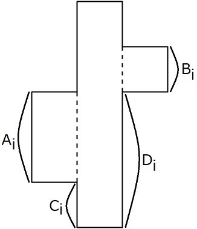
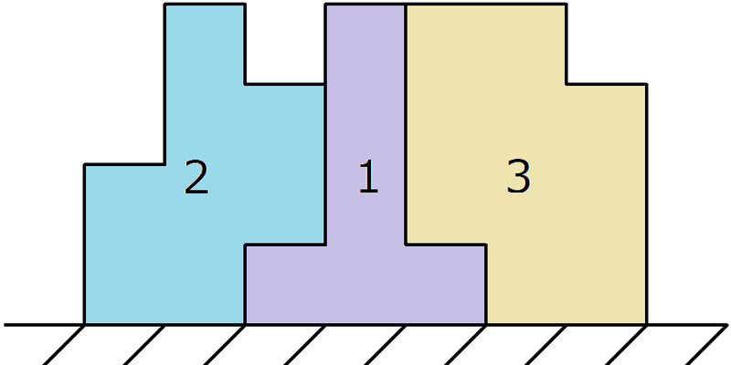

有 $N$ 块图形不规则的拼图，每块拼图可以看成连接在一起的三个宽度为 $1$ 的矩形，如下图所示：
具体地，其中中间的矩形的高度为 $H$，左侧矩形的高度为 $A_i$，距离中间矩形底部 $C_i$，右侧矩形的高度为 $B_i$，距离中间矩形底部 $D_i$。
你现在需要将这些拼图放入一个边长为 $10^{100}$ 的正方形中，需要满足如下条件：
所有 $N$ 块拼图都必须用上。
所有拼图的中间矩形的下底面需要和正方形的下底面对齐。
对于非中间的部分的下底面，要么和正方形的下底面对齐，要么和另一块拼图的非中间部分的上顶面对齐。
拼图只能平移，不能旋转或翻转。
如下图就是一组可行的拼图方案：
求是否存在一组可行的拼图方案。
第一行包含两个正整数 $N, H$ ($N \leq 10^5; H \leq 200$)，表示拼图的块数和拼图的最高高度。
接下来 $N$ 行，每行四个非负整数 $A_i, B_i, C_i, D_i$ ($1 \leq A_i, B_i \leq H; 0 \leq C_i \leq H - A_i; 0 \leq D_i \leq H - B_i$)，描述一块拼图的各个参数。
输出一行，包含一个字符串，如果存在可行的拼图方案，则为 YES；如果不存在，则为 NO。
对于一块拼图，如果它的一侧的小矩形不是 "接地" 的，那么这个小矩形一定会和另外某个拼图的 "接地" 的小矩形相接 —— 于是它的高度其实无关紧要了，我们只关心非 "接地" 小矩形的 $C_i$/$D_i$。
当然，对于 "接地" 的小矩形，那么有 $C_i = 0$ (或 $D_i = 0$)，那么我们需要关注它的高度 $A_i$/$B_i$。
于是，对于每块拼图的一侧，我们可以给它对应到个参数：如果是接地的，称它是 "下 $A_i$" (或 "下 $B_i$")，否则，称它为 "上 $C_i$" (或 "上 $D_i$") 的。
那么，根据拼图的规则，"上 $x$" 的一侧必定和某个矩形的 "下 $x$" 相接，而最两端的矩形两侧一定是 "下 $x$"。
由于 "上 $x$" 和 "下 $x$" 之间相连没有什么特别好利用的性质，如果是 "上 $x$" 和 "上 $x$" 那就好了。
于是我们不妨将左右方向也利用起来 —— 即对于左侧的小矩形，用点 $N_x$ 表示 "上 $x$"，点 $P_x$ 表示 "下 $x$"，对于右侧的小矩形，则负负得正反过来，用点 $P_x$ 表示 "上 $x$"，点 $N_x$ 表示 "下 $x$"。
考虑两个拼图的连接处，此时它们就一定是相同的点了 —— 要么均为 $P_x$，要么均为 $N_x$。
然后，对于一个拼图 $\left( u, v \right)$，我们连接一条从 $u$ 指向 $v$ 的边，于是一连串拼图构成的组就对应所得图上的一条有向路径，且路径的起点一定是某个 $P_x$，终点一定是某个 $N_x$。
于是我们只需判断整张图 $G$ 是否可以被拆分成若干条从 $P_x$ 指向 $N_x$ 的有向路径即可。
而对于这个问题，我们考虑建立一个超级点 $S$，它能向所有形如 $P_x$ 的点提供源源不断的入边，也可以使足够多的 $N_x$ 点连向它。
因此，对于每条路径 $P_x \to v_1 \to v_2 \to \cdots \to v_m \to N_y$，我们在它的两侧分别补上 $N_y \to S$ 和 $S \to P_x$，这样就得到了一个有向圈。
这说明，在连结若干条形如 $S \to P_x$ 以及 $N_y \to S$ 的边后，图 $G$ 将变成一张 Euler 图。
由 Euler 图的性质知，对于 $\forall v \in G$，有 $d^+ \left( v \right) = d^- \left( v \right)$。
但是具体我们对于 $S$ 点加了多少条边我们是不知道的，我们只知道它加的边数肯定是一个非负数。
因此，可以知道的信息是，在去掉 $S$ 点及它关联的边后：
$\forall P_x \in G$，有 $d^- \left( P_x \right) \leq d^+ \left( P_x \right)$ (ps: $d^-$ 是入度，$d^+$ 是出度，别搞反了)。
$\forall N_x \in G$，有 $d^- \left( N_x \right) \geq d^+ \left( N_x \right)$。
那么，考虑一个必要条件，自然会反过来考虑它是否充分。
实际上，它基本就是充分的，但还有一些小小的 Case (情形)。
首先，如果一张图满足上述 1. 2.，那么我们将 $S$ 点与若干个点连边后，可以得到一张 Euler 图 (且这个方案事实上是唯一的，即我们可以算出 $S$ 该向每个点连多少条边)。
然后，由 Euler 图的性质，可得到 $S$ 的若干条 Euler 回路 (这里用若干的原因是 $G$ 不一定连通)。
那么，考虑其中的每个圈 (注意与回路的区别)，如果它经过 $S$，那么将 $S$ 点去掉后，就得到一个可行的路径。
如果这个圈不经过 $S$ 点呢？
那么，如果这个圈可以和一个包含 $S$ 点的圈合并，得到一个大的回路，那么这个回路也满足条件 (只需要边不重复即可)。于是，我们希望这些圈尽可能地进行合并，就像这道题一样。
所以，考虑最终得到的每个图的连通分量 (由于 Euler 图的强连通性保证了这里的强连通分量和弱连通分量是同一个东西，下简称连通分量)，如果存在一个不包含 $S$ 的连通分量，则问题是无解的 —— 因为这个圈/回路不包含 $S$，从而不可能找到一条对应的路径经过 $S$ 和圈/回路中所有的边。
而反之，如果所有连通分量都包含 $S$ (从而只有一个连通分量)，那么问题就是有解的了。
于是，我们使用并查集维护一下连通性就可以了。注意到，在满足 1. 2. 的条件下，一个点和 $S$ 相连当且仅当它的入度和出度不相等。
时间复杂度 $O \left( N + H \right)$。
#include <bits/stdc++.h>
const int N = 432;
int n, H, V;
int p[N], in[N], out[N];
bool dicyc[N];
int ancestor(int x) {return p[x] == x ? x : (p[x] = ancestor(p[x]));}
int main() {
int i, Lu, Ld, Ru, Rd, L, R;
scanf("%d%d", &n, &H), V = 2 * H;
std::iota(p, p + V, 0);
for (i = 1; i <= n; ++i)
scanf("%d%d%d%d", &Lu, &Ru, &Ld, &Rd),
++out[L = (Ld ? Ld + H : Lu) - 1], ++in[R = (Rd ? Rd : Ru + H) - 1],
p[ancestor(L)] = ancestor(R);
for (i = 0; i < H && in[i] <= out[i] && in[i + H] >= out[i + H]; ++i);
if (i != H) return puts("NO"), 0;
for (i = 0; i < V; ++i) dicyc[ancestor(i)] |= in[i] != out[i] || !in[i];
for (i = 0; i < V && (p[i] != i || dicyc[i]); ++i);
return puts(i == V ? "YES" : "NO"), 0;
}
坑1：注意我们前面为了让相同的点匹配，因此左右两侧的 $P$ 和 $N$ 的定义是相反的。
坑2：如果像上面代码一样不建立 $S$ 点，那么上述条件就等价于每个连通分量至少存在一个点的入度和出度不相等。